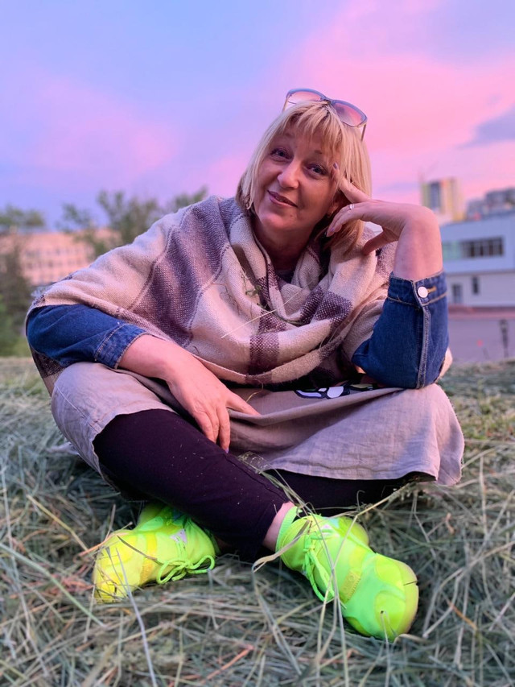

Наша миссия
Профессиональное развитие
Создание контента для различных СМИ (газеты, телевидение, радио), а также освещение событий в учреждении, городе и стране.
Развитие личности
Развитие личности обучающегося как начинающего журналиста, его социализация и самоутверждение в обществе.
Практический опыт
Получение реального опыта работы в медиасфере, формирование портфолио и профессиональных навыков.
Направления обучения
Журналист
Научим писать статьи правильно, создавать интересные материалы разных жанров, работать с информацией.
Верстальщик
Освоим основы графического дизайна и вёрстки печатных изданий, создадим собственный макет газеты.
Корреспондент
Познакомим с работой корреспондента: сбор информации, интервью, репортажи, новостные заметки.
Главный редактор
Узнаем, каково это — руководить редакцией, планировать выпуски, координировать работу команды.
Корректор
Научимся находить и исправлять ошибки в текстах, работать с авторским материалом.
Фотограф
Освоим основы фотосъёмки, работу со светом и композицией, создание фоторепортажей.
Выпускающий редактор
Познакомимся с процессом подготовки материалов к публикации, работой с дедлайнами.
Видеомонтажёр
Освоим основы создания видеоконтента: съёмка, монтаж, работа со звуком и графикой.
Наш педагог

Светлана Витальевна Белоусова
Опытный педагог с многолетним стажем работы в сфере журналистики и медиаобразования. Поможет раскрыть творческий потенциал каждого ученика, освоить практические навыки работы в медиаиндустрии и подготовить качественное портфолио для будущей профессии.
Под руководством Светланы Витальевны ученики медиашколы «ДЮйМ» создают собственные медиапроекты, публикуются в региональных СМИ и участвуют в профессиональных конкурсах.